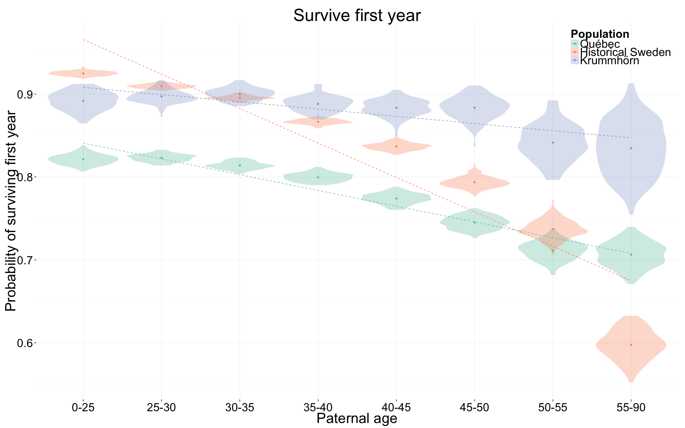
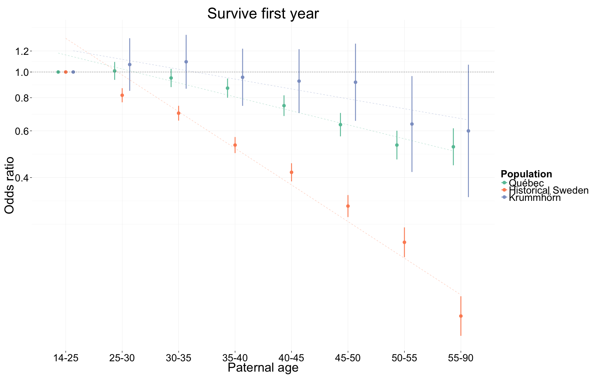
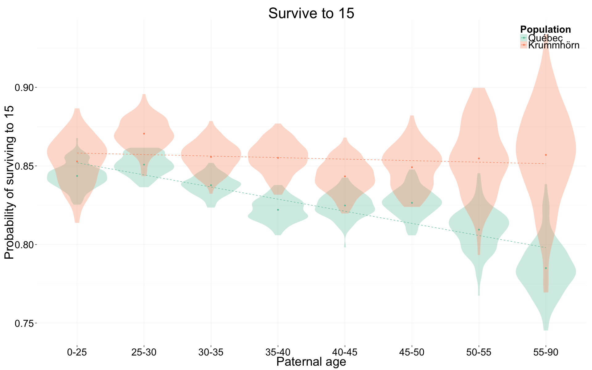
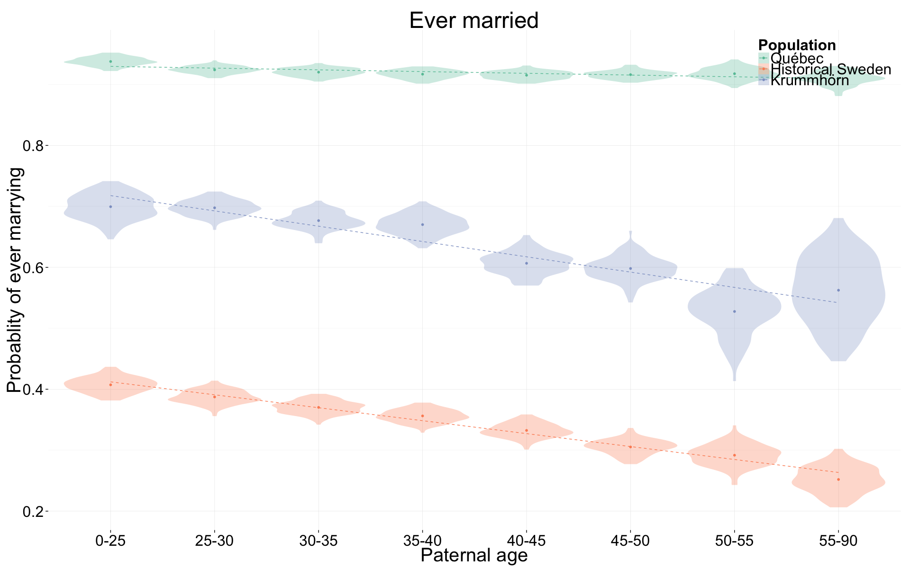
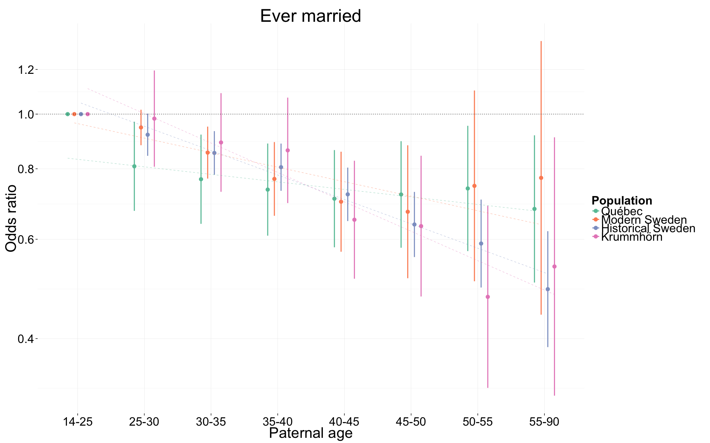
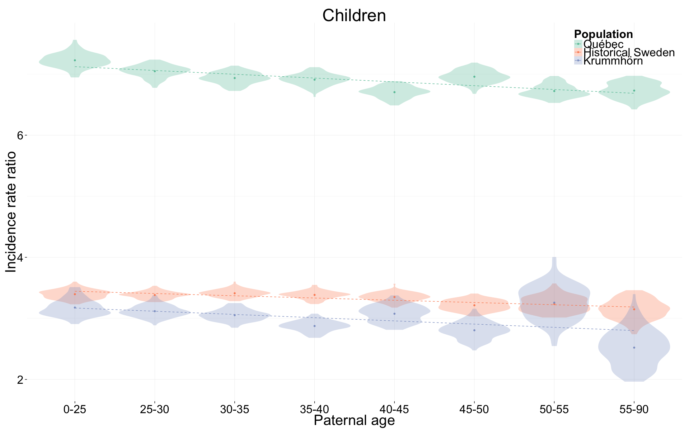
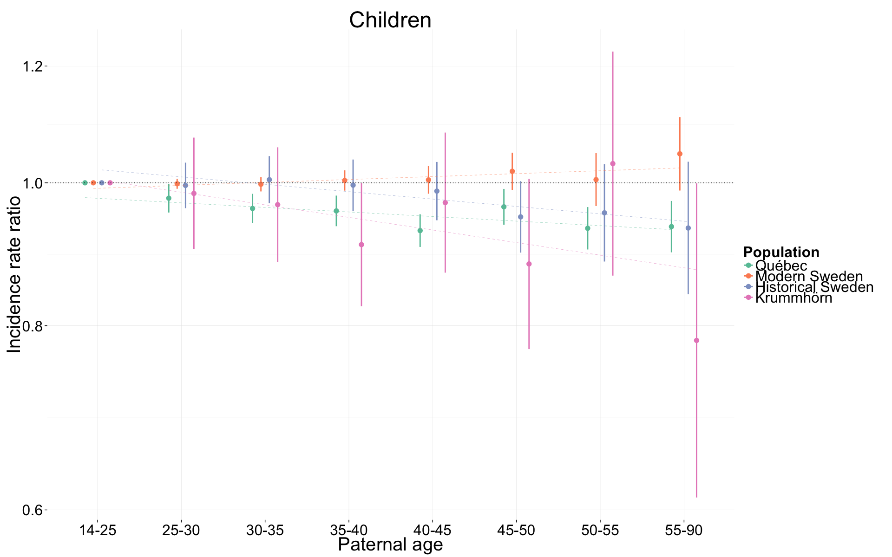
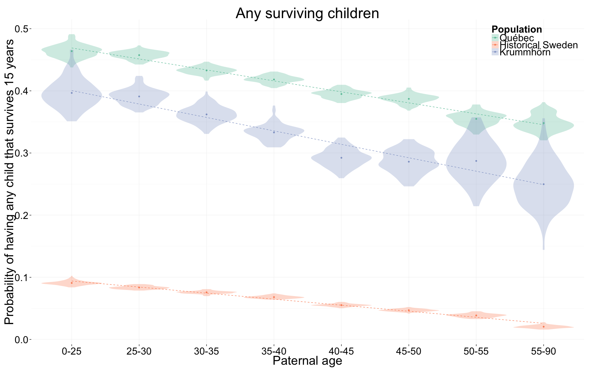
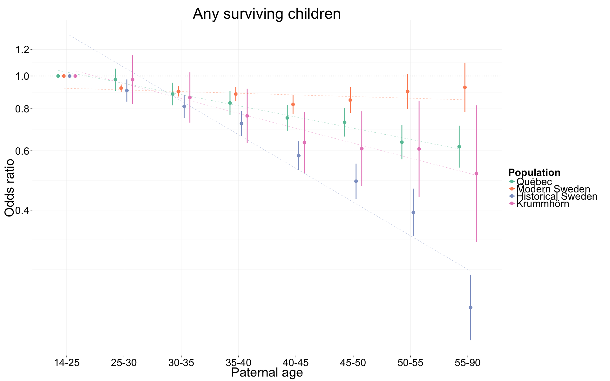

Compare selective episodes across populations
We control for birth.cohort (birth years in five equally large bins), male sex and region.
Loading details
library(data.table); library(ggplot2); library(knitr);
opts_chunk$set(warning=TRUE,message=F,tidy=FALSE,dev=c('png','pdf'),fig.width=20,fig.height=12.5,out.width='1440px',out.height='900px', cache = F)
source("0__helpers.R")Analysis description
We load the coefficients estimated in the sibling comparisons with extensive controls for the Krummhörn, Québec, historical and modern Sweden and compare them.
krmh_coefs = local({load("coefs/krmh_nonlinear_coefs.rdata"); environment()})
rpqa_coefs = local({load("coefs/rpqa_nonlinear_coefs.rdata"); environment()})
ddb_coefs = local({load("coefs/ddb_nonlinear_coefs.rdata"); environment()})
swed_coefs = local({load("coefs/swed_nonlinear_coefs.rdata"); environment()})
krmh = local({load("coefs/krmh_nonlinear_boot.rdata"); environment()})
rpqa = local({load("coefs/rpqa_nonlinear_boot.rdata"); environment()})
ddb = local({load("coefs/ddb_nonlinear_boot.rdata"); environment()})
swed = local({load("coefs/swed_nonlinear_boot.rdata"); environment()})Surviving first year
coefs = merge_coefs(
Krummhörn = (krmh$Survive_infancy_boot),
Québec = (rpqa$Survive_infancy_boot),
`Historical Sweden` = (ddb$Survive_infancy_boot)
# , `Modern Sweden` = (swed$Survive_infancy_boot)
)
factor_boot_plot(coefs) + ylab("Probability of surviving first year") + ggtitle("Survive first year")
odds ratios
coefs = merge_coefs(
Krummhörn = mod_coefs_factor(krmh_coefs$Survive_infancy_coefs),
Québec = mod_coefs_factor(rpqa_coefs$Survive_infancy_coefs),
`Historical Sweden` = mod_coefs_factor(ddb_coefs$Survive_infancy_coefs)
# , `Modern Sweden` = mod_coefs_factor(swed_coefs$Survive_infancy_coefs)
)
factor_plot(coefs) + ylab("Odds ratio") + ggtitle("Survive first year")
Surviving to 15
SurviveR = merge_coefs(
Krummhörn = (krmh$Survive_reproductive_boot),
Québec = (rpqa$Survive_reproductive_boot)
# `Historical Sweden` = (ddb$Survive_reproductive_boot)
)
factor_boot_plot(SurviveR) + ylab("Probability of surviving to 15") + ggtitle("Survive to 15")
odds ratios
coefs = merge_coefs(
Krummhörn = mod_coefs_factor(krmh_coefs$Survive_reproductive_coefs),
Québec = mod_coefs_factor(rpqa_coefs$Survive_reproductive_coefs),
`Historical Sweden` = mod_coefs_factor(ddb_coefs$Survive_reproductive_coefs))
factor_plot(coefs) + ylab("Odds ratio") + ggtitle("Survive to 15")
Ever married
coefs = merge_coefs(
Krummhörn = (krmh$Ever_married_boot),
Québec = (rpqa$Ever_married_boot),
`Historical Sweden` = (ddb$Ever_married_boot)
# `Modern Sweden` = (swed$Ever_married_boot)
)
factor_boot_plot(coefs) + ylab("Probablity of ever marrying") + ggtitle("Ever married")
odds ratios
coefs = merge_coefs(
Krummhörn = mod_coefs_factor(krmh_coefs$Ever_married_coefs),
Québec = mod_coefs_factor(rpqa_coefs$Ever_married_coefs),
`Historical Sweden` = mod_coefs_factor(ddb_coefs$Ever_married_coefs),
`Modern Sweden` = mod_coefs_factor(swed_coefs$Ever_married_coefs)
)
factor_plot(coefs) + ylab("Odds ratio") + ggtitle("Ever married")
Children
coefs = merge_coefs(
Krummhörn = (krmh$Children_boot),
Québec = (rpqa$Children_boot),
`Historical Sweden` = (ddb$Children_boot)
# `Modern Sweden` = (swed$Children_boot)
)
factor_boot_plot(coefs) + ylab("Incidence rate ratio") + ggtitle("Children")
incidence rate ratios
coefs = merge_coefs(
Krummhörn = mod_coefs_factor(krmh_coefs$Children_coefs),
Québec = mod_coefs_factor(rpqa_coefs$Children_coefs),
`Historical Sweden` = mod_coefs_factor(ddb_coefs$Children_coefs),
`Modern Sweden` = mod_coefs_factor(swed_coefs$Children_coefs)
)
factor_plot(coefs) + ylab("Incidence rate ratio") + ggtitle("Children")
Any surviving children
coefs = merge_coefs(
Krummhörn = (krmh$Any_surviving_children_boot),
Québec = (rpqa$Any_surviving_children_boot),
`Historical Sweden` = (ddb$Any_surviving_children_boot)
# `Modern Sweden` = (swed$Any_children_boot)
)
factor_boot_plot(coefs) + ylab("Probability of having any child that survives 15 years") + ggtitle("Any surviving children")
odds ratios
coefs = merge_coefs(
Krummhörn = mod_coefs_factor(krmh_coefs$Any_surviving_children_coefs),
Québec = mod_coefs_factor(rpqa_coefs$Any_surviving_children_coefs),
`Historical Sweden` = mod_coefs_factor(ddb_coefs$Any_surviving_children_coefs),
`Modern Sweden` = mod_coefs_factor(swed_coefs$Any_children_coefs)
)
factor_plot(coefs) + ylab("Odds ratio") + ggtitle("Any surviving children")
Wrap up
Session Info
sessionInfo()## R version 3.1.3 (2015-03-09)
## Platform: x86_64-apple-darwin13.4.0 (64-bit)
## Running under: OS X 10.10.2 (Yosemite)
##
## locale:
## [1] en_US.UTF-8/en_US.UTF-8/en_US.UTF-8/C/en_US.UTF-8/en_US.UTF-8
##
## attached base packages:
## [1] grid graphics grDevices utils datasets stats methods
## [8] base
##
## other attached packages:
## [1] mgcv_1.8-6 nlme_3.1-120 Hmisc_3.15-0 Formula_1.2-1
## [5] survival_2.38-1 lattice_0.20-31 reshape2_1.4.1 lubridate_1.3.3
## [9] car_2.0-25 stringi_0.4-1 dplyr_0.4.1 pander_0.5.2
## [13] knitr_1.9 rmarkdown_0.5.1 plyr_1.8.1 ggplot2_1.0.1
## [17] formr_0.1.15 data.table_1.9.5 stringr_0.6.2 devtools_1.7.0
##
## loaded via a namespace (and not attached):
## [1] acepack_1.3-3.3 assertthat_0.1 chron_2.3-45
## [4] cluster_2.0.1 colorspace_1.2-6 DBI_0.3.1
## [7] digest_0.6.8 evaluate_0.6 foreign_0.8-63
## [10] formatR_1.1 gtable_0.1.2 htmltools_0.2.6
## [13] labeling_0.3 latticeExtra_0.6-26 lazyeval_0.1.10
## [16] lme4_1.1-7 magrittr_1.5 MASS_7.3-40
## [19] Matrix_1.2-0 memoise_0.2.1 minqa_1.2.4
## [22] mnormt_1.5-2 munsell_0.4.2 nloptr_1.0.4
## [25] nnet_7.3-9 parallel_3.1.3 pbkrtest_0.4-2
## [28] proto_0.3-10 psych_1.5.1 quantreg_5.11
## [31] RColorBrewer_1.1-2 Rcpp_0.11.5 rpart_4.1-9
## [34] scales_0.2.4 SparseM_1.6 splines_3.1.3
## [37] tools_3.1.3date()## [1] "Sat May 9 10:36:21 2015"